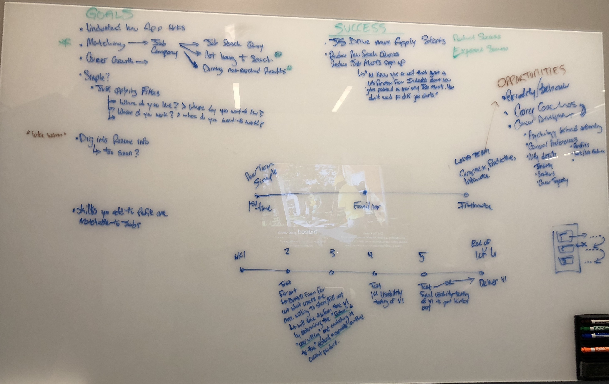
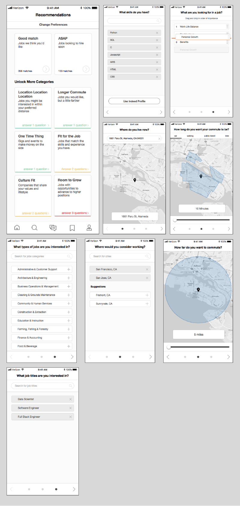
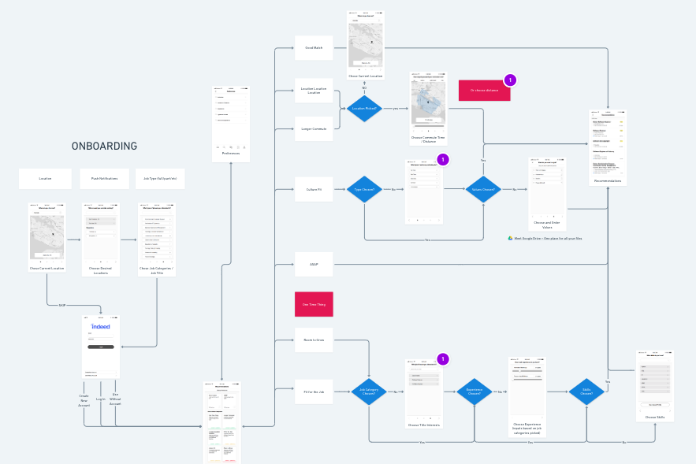
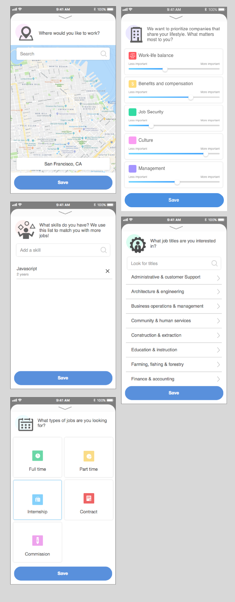
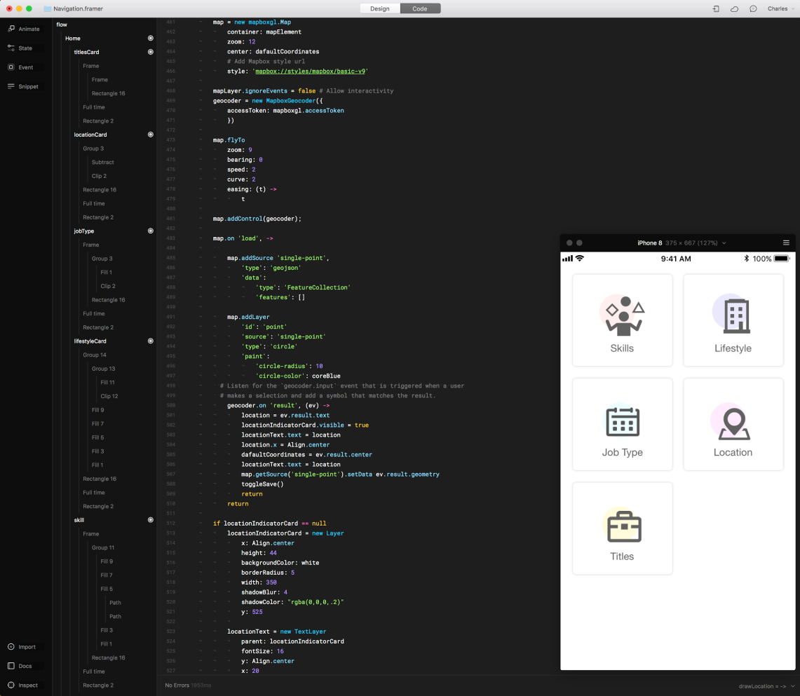
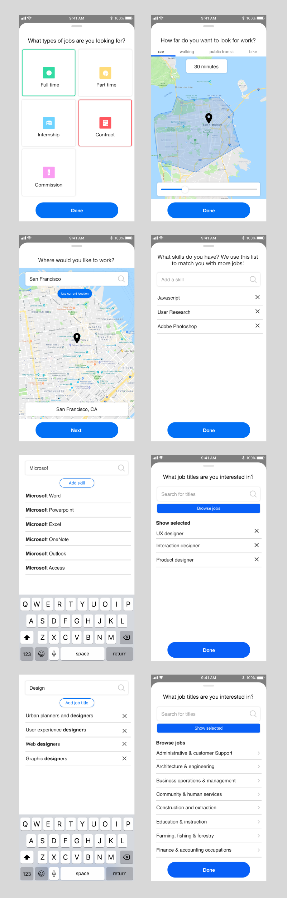
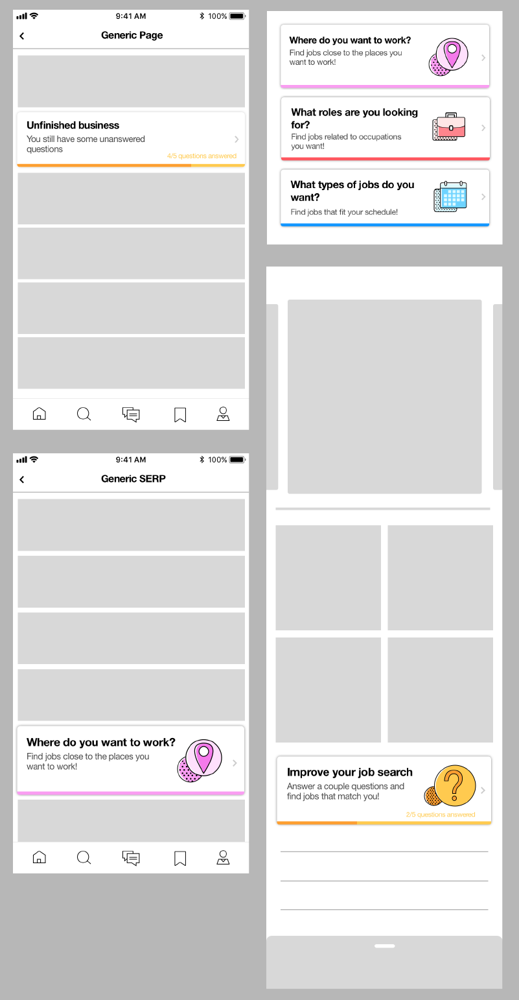
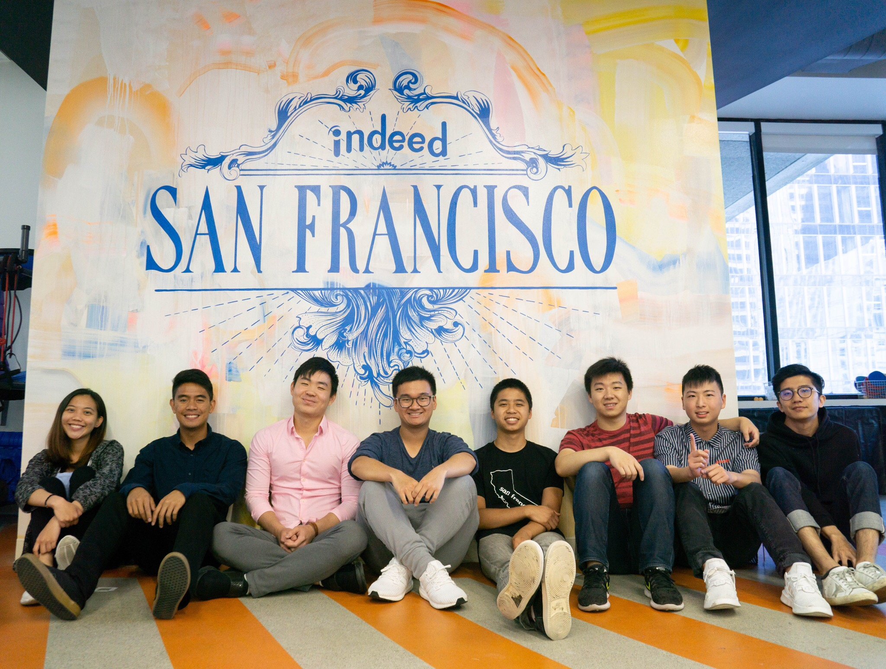

Indeed
"We Help People Get Jobs"
OVERVIEW
Last summer I interned at Indeed as a UX design intern. I worked with my mentor Michael Swingler on designing user input screens for Indeed’s mobile app, while also getting the chance to witness Indeed’s design system grow over the summer!
Goal
Increase the number of “applies” (when users click ‘apply’) on mobile.
Increase the number of “applies” (when users click ‘apply’) on mobile.
Potential Solution
This idea is what I was tasked with exploring for my project over the summer!
• Hypothesis: Having more data about user preferences will lead to more relevant jobs for the user. And more relevant jobs will lead to more applies
• Idea: A series of screens that collect data from users that help Indeed match Job Seekers to jobs they’ll be interested in
• Idea: A series of screens that collect data from users that help Indeed match Job Seekers to jobs they’ll be interested in
This idea is what I was tasked with exploring for my project over the summer!
RESEARCH

I started by familiarizing myself with Indeed’s products, discussed with my mentor and PM, and read up on existing research, including their personas. Unfortunately I cannot share Indeed’s personas or research on my site, but with these details in mind, I focused on three cases:
• New Users
• Currently active users
• Users coming back from not using the app in a while
• Currently active users
• Users coming back from not using the app in a while
Competitive Analysis

I went through apps related to job searching to evaluate their features. In particular, I paid attention to the questions and inputs these apps had related to the Job Seeker journey. Unfortunately I no longer have access to the research document write-up since the end of my internship.
Synthesis
Based off of Indeed’s data, personas, and competitors in the job space, the following were possibly relevant topics to ask Job Seekers about during an onboarding process:
Based off of Indeed’s data, personas, and competitors in the job space, the following were possibly relevant topics to ask Job Seekers about during an onboarding process:
• Job Type
• Location
• Company
• Experience level
• Point in their job search
• Urgency
• Lifestyle preferences
For now, some of these topics are simply query filters on Indeed's products, but the idea is to store this data on Job Seekers' profiles to enhance future job results and suggestions.
- Full time, part time, etc
• Salary• Location
• Company
• Experience level
• Point in their job search
• Urgency
• Lifestyle preferences
IDEATION
With these topics in mind, I sketched out screens to address these possible areas of user input!

Initial Mockups
I digitized my ideas and met regularly with both my mentor and project manager to get feedback and discuss the screens.

I digitized my ideas and met regularly with both my mentor and project manager to get feedback and discuss the screens.
User Flow
I used Whimsical to create an initial user flow for the screen ideas I had. You can look more closely at the flow here!

I used Whimsical to create an initial user flow for the screen ideas I had. You can look more closely at the flow here!
This flow explored the different path's a Job Seeker could take to go through the different onboarding screens that would lead to recommendations pages with relevant jobs!
Principle Prototypes!
I also explored interactions for a couple of the screens I created.
I also explored interactions for a couple of the screens I created.
Upping the Fidelity
Afterwards, I added some color and visual design to the mock-ups! We also narrowed down the set of screens we wanted to prototype and test.

Afterwards, I added some color and visual design to the mock-ups! We also narrowed down the set of screens we wanted to prototype and test.
PROTOTYPING + USER TESTING
Framer Prototype
I had the oppportunity to learn and utilize Framer this summer for my project, and it has become my favorite tool for prototyping! Framer is such a powerful tool that is more interactive than Invision, more flexible and scalable than Principle, and faster than html/css/javascript!
I had the oppportunity to learn and utilize Framer this summer for my project, and it has become my favorite tool for prototyping! Framer is such a powerful tool that is more interactive than Invision, more flexible and scalable than Principle, and faster than html/css/javascript!
Here's the prototype I built for testing:

The home screen on the prototype was simply a placeholder, in order to navigate and test each screen, because the final design of the app itself is still in progress.
It was particularly fun to create was the location screen, utilizing MapBox’s API for rendering interactive maps, as well as implementing autocomplete for interactive input boxes, rather than having a static answer/flow for user testing.
User Testing
I worked with UX Researcher Georgia Gallavin to test my Framer prototype, utilizing UserTesting.com with 8 different users on their mobile phones. Here were a couple takeaways from the study:
I worked with UX Researcher Georgia Gallavin to test my Framer prototype, utilizing UserTesting.com with 8 different users on their mobile phones. Here were a couple takeaways from the study:
Research Questions:
• How do job seekers interpret the value of the onboarding? Is it clear how it will help them in their search?
• Are the onboarding categories relevant and desirable for a job seeker? What, if anything, is missing or confusing?
• Are job seekers able to easily complete the onboarding exercises? What pain points, if any, exist?
• Are the onboarding categories relevant and desirable for a job seeker? What, if anything, is missing or confusing?
• Are job seekers able to easily complete the onboarding exercises? What pain points, if any, exist?
Top Takeaways:
• Overall, job seekers understood the exercises were the first step in matching them with relevant jobs based on their entered information.
• Job seekers expected to be able to enter their salary preference and experience level as part of the onboarding.
• The ability to create a skill from scratch without relying on the provided list was unclear to job seekers. The majority of job seekers did not notice the show/hide control to review their selected job titles.
• Job seekers expected to be able to enter their salary preference and experience level as part of the onboarding.
• The ability to create a skill from scratch without relying on the provided list was unclear to job seekers. The majority of job seekers did not notice the show/hide control to review their selected job titles.
Detailed Takeaways:
• One job seeker preferred to start with a search for jobs, rather than entering a set of preferences before viewing the recommended jobs.
• Although entering lifestyle criteria was unique and novel, job seekers struggled to understand how this information would map to relevant jobs.
• Job seekers viewed the Skills area as a place to pick and choose from an existing list using the search box.
• Job seekers used a variety of methods including entering a zipcode, using the autosuggest dropdown, or selecting their current location to add their location preference.
• Job seekers often looked for a way to target a broader area on the map to share how far they were willing to travel
• Most job seekers typed an industry or job title directly into the search box and selected a result, rather than browse through categories.
The show/hide selected control was overlooked by 7 of 8 participants.
• Although entering lifestyle criteria was unique and novel, job seekers struggled to understand how this information would map to relevant jobs.
• Job seekers viewed the Skills area as a place to pick and choose from an existing list using the search box.
• Job seekers used a variety of methods including entering a zipcode, using the autosuggest dropdown, or selecting their current location to add their location preference.
• Job seekers often looked for a way to target a broader area on the map to share how far they were willing to travel
• Most job seekers typed an industry or job title directly into the search box and selected a result, rather than browse through categories.
The show/hide selected control was overlooked by 7 of 8 participants.
MOVING FORWARD
Iterate
I took some of the feedback from user testing and made changes to the final designs! I also worked with content strategist, Michael Lawrence, on copy for each screen.

I took some of the feedback from user testing and made changes to the final designs! I also worked with content strategist, Michael Lawrence, on copy for each screen.
Next Steps
Because the user flow for the entire mobile app is still being worked on by my mentor and his team, it’s still not certain where my screens will end up in the final design.
Because the user flow for the entire mobile app is still being worked on by my mentor and his team, it’s still not certain where my screens will end up in the final design.
An idea I had was to have dynamic CTA’s for each screen float around with job feeds, so that users can choose to fill in their information when they have time, rather than doing everything in one sitting.

For now, Indeed is taking steps towards finalizing the native version of Indeed’s mobile app, and hopefully my ideas and contributions show up in the final version when it’s released!
TAKEAWAYS
• Think ahead, then scale back

- For this project, the approach was to create and test ideas that may or may not be possible with Indeed’s current data and technology. This was done in order to innovate and explore new ideas, so that in the future Indeed might be able to take these insights and actually apply them! In the meantime, Indeed engineers can take what is practical and doable now and implement it. Win win!
• Mentorship matters
- I really valued the guidance of my mentor who has had 20 years of experience in industry, especially because his background in art really helped me learn as a student whose primary education is in Computer Science. Michael sat right across from me every day and was more than happy to answer all my questions and concerns. It really made my internship a positive experience and pushed me to grow a lot as a designer!
Thanks for reading!